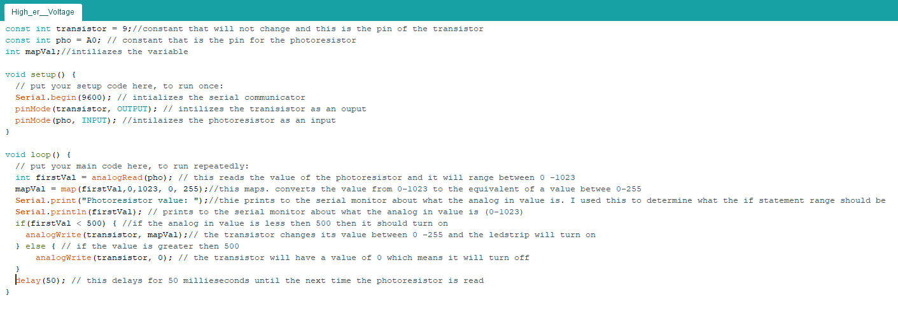

Here is all the documentation for assignment 4 which includes the circuit board, schematic, a code snippet. Sadly, The circuit operation is not present at the moment because the arduino broke.
The breadboard is on the left which is connected to the arduino and the led strip The breadboard also had a photoresistor so that turned the lighting on the led strip to on or off.
The transistor is connected to pin 9 and the photoresistor is connected to pin A0. On the farthest right it is showing which wires are connected.
To see more information about the board layout look at the schematic.
This shows the calculations of ohms and which resistors I used. The equation I used was ohms law which is Voltage (volts) = current (Amperes) * Resistance (ohms). Short hand it is V(V) = I(A) * R(ohms)
For the first calculation I used 5V because this is the voltage coming from the controller board. I used 20mA for I because that is the desired current.
I used a 10K resistor becasue it insures that there will not be a short and it limits the current. If I were also to change the resistor it would change the output voltages/ sensor readings.
For the second calculation I was finding how much current is running through the transistor. I found how many lights I was using and found the watts. Using this I found how much current is running through
my transistor. As long as it is under.6A then I am not going over the max current.
For the last calculation I was finding what the minimum resistance for the transistor which is 11.9 but I used a 10K resistor to insure that there will not be a short and it limits the current.
This is the schematic which shows which pins, resistors and voltage that was used on the board.

This shows the code that I used to make the led strip turn on/off with the photoresistor
Sadly, my Arduino broke and there is no video to show for now.